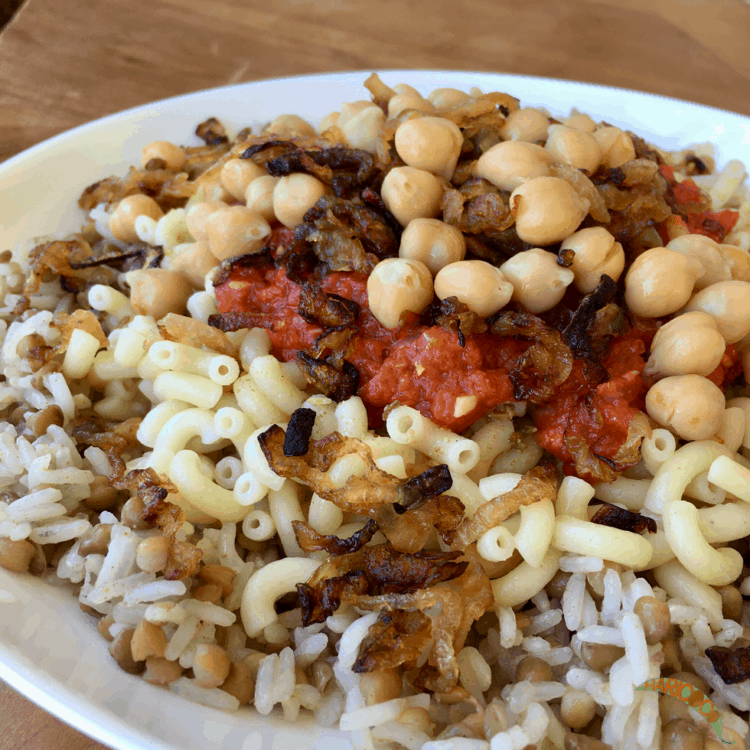

Koshari

Description
Koshari (also spelled koshary or kushari) is the national dish of Egypt.
Ingredients
- 3/4 Brown lentils
- 4 cup water
- 3/4 Long grain rice
- 1 cup elbow macaroni
- 2 tablesppon vegtable oil
- 2 large chopped onions
- 4 large minced garlic
- 15oz diced tomatoes
- 1/4 teaspoon red pepper flakes
- Salt and pepper
Steps
- Combine the lentils and water in a large saucepan. Bring to a boil, then simmer over medium heat for 25
minutes.
- Add the rice to the lentils, and continue to simmer for an additional 20 minutes, or until rice is tender.
- Fill a separate saucepan with lightly salted water and bring to a boil. Add the macaroni and cook until
tender, about 8 minutes. Drain.
- Meanwhile, heat the vegetable oil in a large skillet over medium heat. Add onion and garlic; cook and stir
until onion is lightly browned.
- Pour in the tomatoes and season with red pepper flakes, salt and pepper. Simmer over medium heat for 10 to
20 minutes.
- In a large serving dish, stir together the lentils, rice and macaroni. Mix in the tomato sauce until evenly
coated.